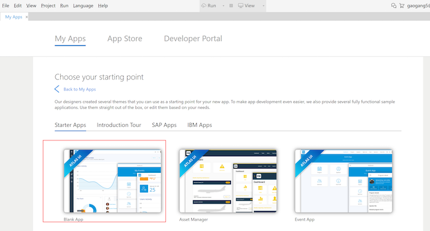
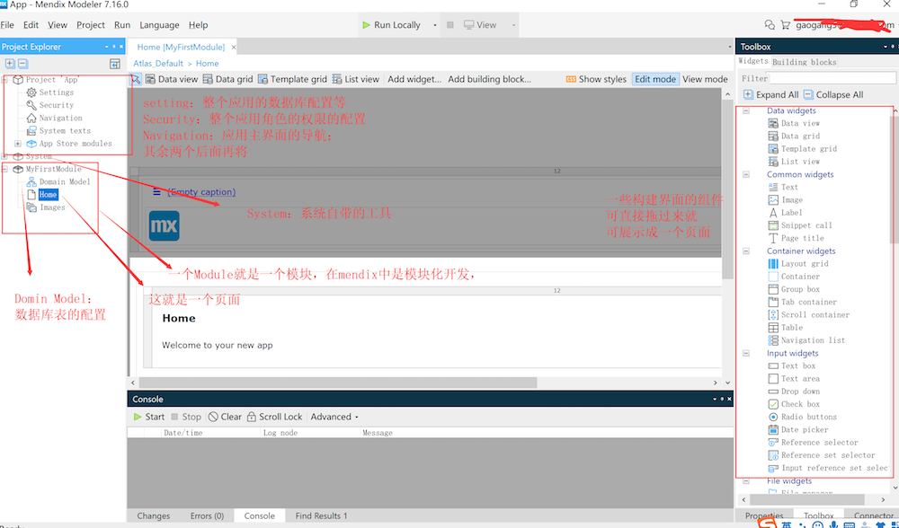

以下所有文件均是原创，如需转载请注明作者和链接地址。
1、主要内容：介绍Mendix的安装教程和如何简单构建一个应用 2、适用人群：初学者； 3、浏览时间：有点点长哦；
Mendix开发主要有两种方式，一种为网页版，一种是客户端；本文推荐使用客户端安装并开发。
一、Mendix安装教程
在安装Mendix之前，最好使用公司的账号在mendix官网注册一个账号，否则在启动客户端时需要验证邮箱；官网注册地址：https://signup.mendix.com/link/signup/?source=direct
1、Mendix安装额外的文件
mendix的安装主要有以下几个文件：
- Microsoft .NET Framework 4.6.2 地址：https://www.microsoft.com/net/download/thank-you/net462
- Microsoft Visual C++ 2010 SP1 Redistributable Package
- Microsoft Visual C++ 2013 Redistributable Package
- Java Development Kit 1.8 地址：https://www.oracle.com/technetwork/java/javase/downloads/jdk8-downloads-2133151.html
- Mendix客户端 地址：https://appstore.home.mendix.com/link/modelers/ （最好下载最新的哦，访问可能有点慢） 记得在安装mendix客户端前安装上述四个文件，并将Java路径设置到系统变量中去哦。
2、安装客户端
在开始构建应用程序之前，需要在计算机上安装Mendix Desktop Modeler。请按照以下步骤安装Mendix Desktop Modeler： 打开下载的Mendix Modeler可执行文件。它的名字如下：Mendix-7.XX-Setup。
单击下一步。
选择我接受许可协议中的条款，然后单击下一步。
选择要安装到的文件夹，然后单击“ 下一步”。
输入要使用的开始菜单快捷方式文件夹，然后单击“ 下一步”。
选中“ 桌面”选项以在桌面上创建Modeler的快捷方式，然后单击“ 下一步”。
单击“ 安装”以在计算机上安装Modeler。
选中Launch Mendix 7.XX并单击Finish完成安装并启动Modeler。 以上是有关安装Mendix Desktop Modeler的方法。
二、新建一个项目
1、创建空项目



2、一些简单概念的介绍
在mendix中简单的界面构建以及数据库的创建只是需要简单的拖拽即可。但是又几个概念得提前缕清一下。 微流（Microflow）：类似于Java中的方法，又入参，出参，可在里面做循环，判断等等； 界面（Page）:页面的实现；使用客户端右侧，已经写好的组件拖拽到Page中即可迅速构建h5界面。 实体（在Domin Model中）：在mendix中有两种实体。持久化实体也就是数据库中的表；非持久化实体：Java中的类。 持久化实体：

非持久化实体：

3、一个视频教程
由于无法上传较长视频，所以请需要观看的同学点击以下链接观看：